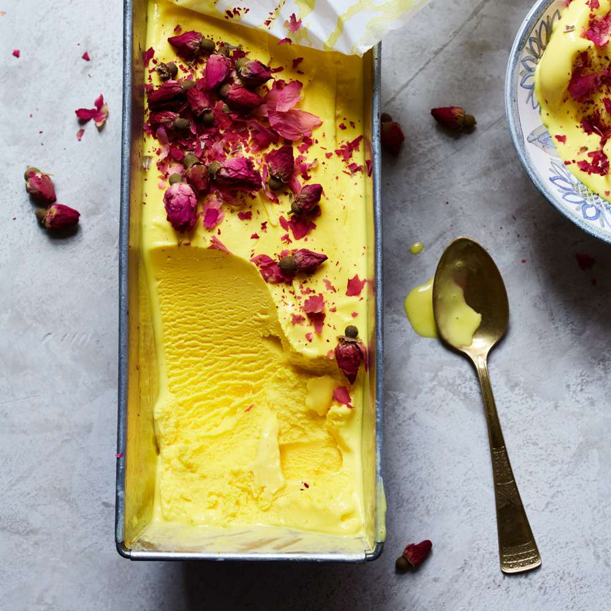

Home
Rose Saffron Ice Cream (Bastani Irani)
Original recipe by Mahin Gilanpour Motamed published in Food & Wine 2017

Description
This fragrant ice cream is redolent with flavor. It's traditionally served between two thin wafers to make ice cream sandwiches, but it's equally delicious on its own.
Ingredients
- 6 large egg yolks
- 1 1/2 cups whole milk
- 3/4 cup sugar
- 1/2 teaspoon kosher salt
- 1/2 teaspoon saffron, finely ground
- 1/4 cup pure rosewater, preferably Sadaf brand
- 1/2 teaspoon pure vanilla extract
- Dried roses, for garnish
Instructions
- Set a medium bowl in a large bowl of ice water. In another medium bowl, beat the egg yolks until pale, 1 to 2 minutes.
- In a medium saucepan, whisk the cream with the milk, sugar, salt and saffron. Bring to a simmer over moderate heat, whisking, until the sugar is completely dissolved. Very gradually whisk half of the hot cream mixture into the beaten egg yolks in a thin stream, then whisk this mixture back into the saucepan. Cook over moderately low heat, stirring constantly with a wooden spoon, until the custard is thick enough to lightly coat the back of the spoon, about 12 minutes; don’t let it boil.
- Strain the custard through a fine-mesh sieve into the bowl set in the ice water. Let the custard cool completely, stirring occasionally. Stir in the rosewater and vanilla extract. Press a piece of plastic wrap directly on the custard and refrigerate until well chilled, at least 4 hours.
- Pour the custard base into an ice cream maker and freeze according to the manufacturer’s instructions. Transfer the ice cream to a chilled 9-by-4-inch metal loaf pan, cover and freeze until firm, at least 4 hours.
- Serve the ice cream in bowls, garnished with dried roses.